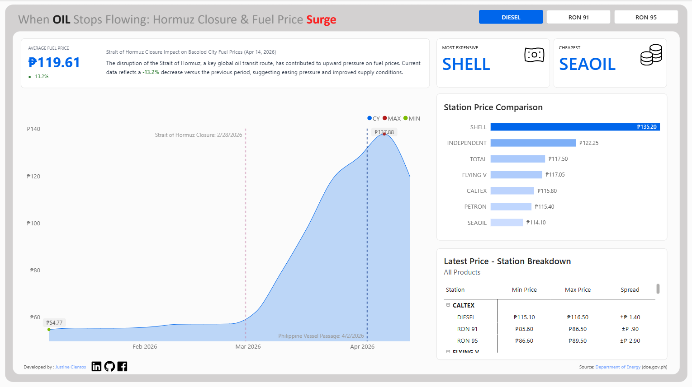

Analyzes geopolitical risks in the Strait of Hormuz and their impact
on global fuel prices, and supply disruptions.
Overview
This Power BI dashboard tracks the real-world impact of the 2026 Strait of Hormuz closure on retail fuel prices across Bacolod City — monitoring Diesel, RON 91, and RON 95 prices across seven major fuel station brands using live data from the Philippine Department of Energy. It was built to give consumers, businesses, and policy watchers a clear, data-driven view of how a global oil supply disruption translated into local pump price surges in real time. The dashboard connects an international geopolitical event directly to its measurable effect on Filipino households and industries.

Business Question
When a critical global oil chokepoint like the Strait of Hormuz is disrupted, the downstream effect on local fuel prices is immediate — but rarely visualized in a way that's accessible or actionable for ordinary consumers and business operators. Logistics companies, small businesses, and commuters in Bacolod City needed to understand not just that prices were rising, but how fast, which stations are cheapest right now, and whether relief is in sight. This dashboard was built to answer exactly those questions with live DOE data, turning a global crisis into a locally relevant, personally actionable intelligence tool.
Key Insights & Features
- Core KPIs Tracked
-
Average Fuel Price (₱119.61, -13.2% vs prior period), Most Expensive Station (Shell at ₱135.20), and Cheapest Station (SeaOil at ₱114.10) — with a ₱21.10 price spread between the top and bottom stations highlighting significant consumer savings potential through station awareness.
- Geopolitical Event Timeline
-
An annotated area chart maps the full price surge from ₱54.77 (pre-crisis) to a peak of ₱137.88 — with two critical reference lines marking the Strait of Hormuz Closure (Feb 28, 2026) and the Philippine Vessel Passage (Apr 2, 2026), making the cause-and-effect relationship between the global event and local prices visually undeniable.
- Station Price Comparison
-
A ranked horizontal bar chart compares average prices across brands — Shell, Total, Flying V, Caltex, Petron, and SeaOil — giving consumers an instant best-value reference for every fill-up decision.
- Latest Price Breakdown by Station & Product
-
A detailed table shows Min Price, Max Price, and Price Spread per fuel type per station — with Caltex's RON 95 showing a ₱2.90 spread, signaling pricing inconsistency that consumers and fleet managers can exploit for savings.
- Fuel Type Toggle
-
Interactive buttons switch the entire dashboard between Diesel, RON 91, and RON 95 views — allowing targeted analysis for different vehicle types and commercial use cases in a single click.
- Analytical Approach
-
Primarily descriptive and diagnostic — the dashboard tracks what happened, when it happened, and which stations responded most aggressively to the supply shock, with the -13.2% MoM change signaling early recovery and easing supply pressure.

| Tool | Usage |
|---|---|
| Power BI | Dashboard design, report pages, interactivity |
| DAX | KPI calculations, YoY/MoM comparisons, margin metrics |
| Power Query (M) | Data transformation and modeling |
| Annotated Reference Lines | Geopolitical event markers (Hormuz Closure, Vessel Passage dates) |
| Data Modeling | Star schema with fact and dimension tables |
Impact & Value
This dashboard is a rare portfolio piece that connects global macroeconomic events to hyperlocal, everyday consumer decisions — and does so with live government data. For consumers, the ₱21.10 price spread between Shell and SeaOil represents a meaningful and immediately actionable savings opportunity. For fleet operators and logistics businesses in Bacolod, the trend chart provides the timing intelligence needed to make bulk fuel purchasing decisions before the next price cycle. Beyond the local use case, this project demonstrates the ability to contextualize data within real-world events — a skill that separates strong analysts from those who only describe numbers. It is also a standout portfolio differentiator: while most dashboards use historical datasets, this one was built on current data during an active geopolitical crisis.